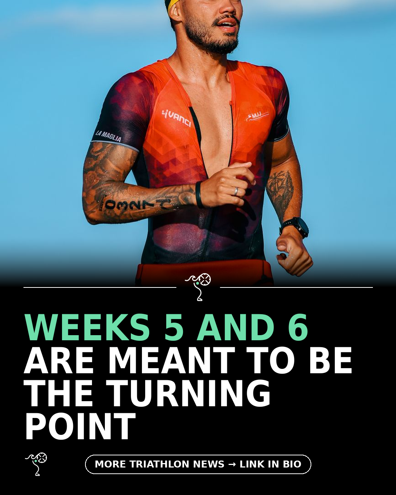

Triathlon News Daily
Saturday, 22 August 2026 · generated automatically

Today's stories
- Inside week five of a triathlete's knee replacement recoveryBlog - A Triathlete's Diary
- Ten running shoes the 220 test team actually rates for 2026220 Triathlon
- How to climb faster without adding a single watt220 Triathlon
- A first-timer on the mentor who got her to the start line220 Triathlon
- Insta360 X6 tested for two months of trail, road and poolDC Rainmaker
- What are the best swimming goggles? Swim coach tests the best options for pool and open-water swims220 Triathlon